Research39기
(예시) 기업 A
전력기기 업황과 수주잔고 점검
2026.10.24PDF
Our Teams
가치투자 한 분야가 아니라 파생상품 프라이싱, 퀀트 모델링, IB 딜, 기업분석을 4개 팀이 나눠 맡고, 연합 스터디로 서로의 시각을 섞습니다.
파생상품 이론과 프라이싱을 익혀 FICC 피치북으로 적용하고 매크로 리포트를 작성합니다.
알파/마켓메이킹 모델을 만들고 검증합니다.
M&A·IPO 딜 구조를 익히고 투자제안서를 씁니다.
기업의 펀더멘털을 분석해 목표주가와 투자의견을 도출합니다.
Curriculum
정규 세션매주 월·목 19:00~22:00참가 대회타임폴리오 · 월드퀀트 IQC · CFA 리서치 챌린지 · DB GAPS · DB 보험금융공모전
Latest Reports
(예시) 기업 A
(예시) 딜 B
(예시) FICC
(예시) KOSPI
Our Story
한양금융공학회는 2007년, 파생상품에 대한 관심을 학내의 깊이 있는 학습으로 이어 가기 위해 세워졌습니다. 지금은 파생상품 · 퀀트 · IBD · 리서치 4개 팀이 금융공학과 기업금융 전반을 공부합니다.
금융 이슈에 대한 발표와 토론, 스터디로 기본을 다지고 이를 실제 문제에 적용하며 배웁니다. 졸업 후 금융권에 진출한 선배들과 네트워크를 이어 가며 함께 금융 인재를 키웁니다.
팀마다 1명씩, 4인 1조로 자유 주제를 연구해 발표
선배와의 만남 매 학기 5회 내외, 홈커밍데이 매 학기 30여 명
타 대학 금융 학회와 팀별 교류 세션
타임폴리오 · 월드퀀트 IQC · CFA 리서치 챌린지 · DB GAPS · DB 보험금융공모전
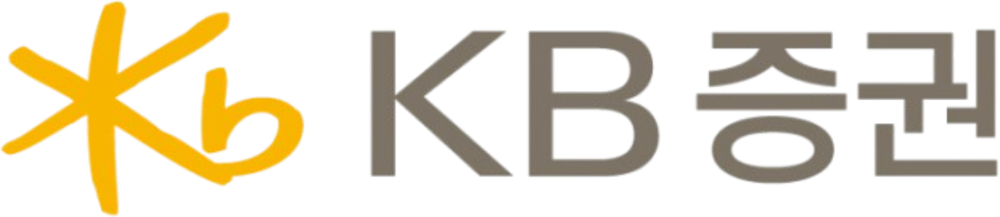
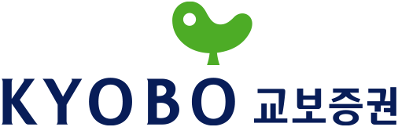
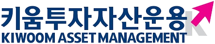
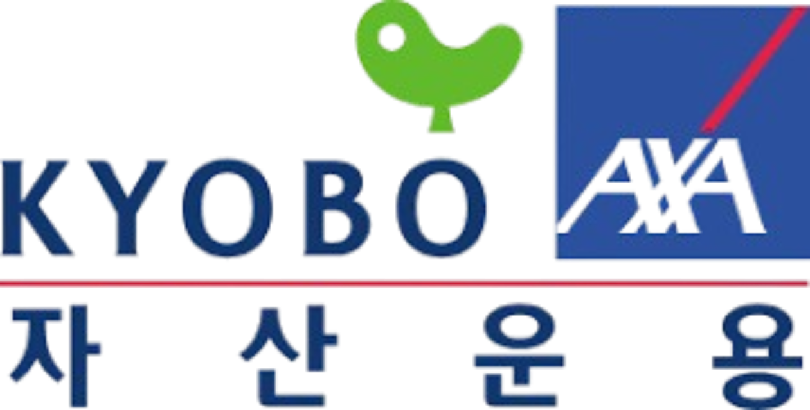
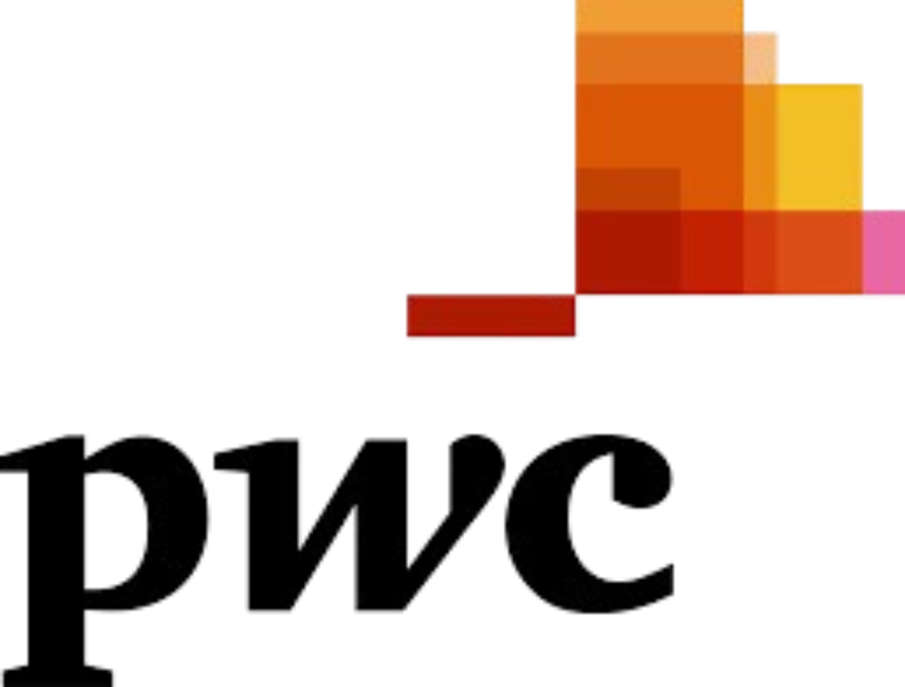
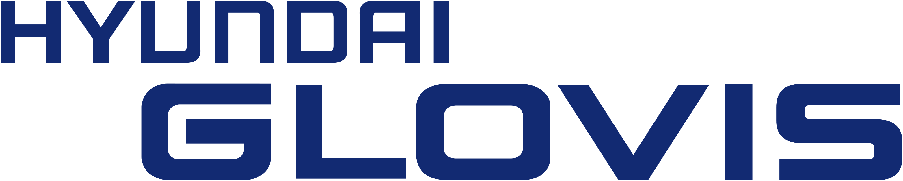
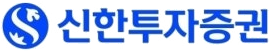
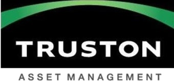
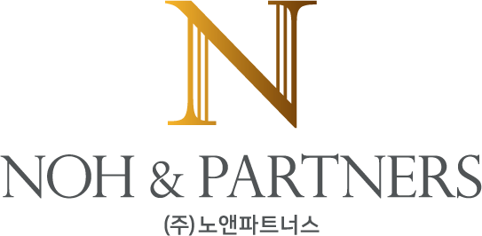
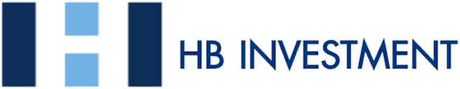
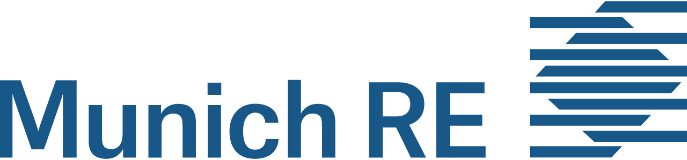
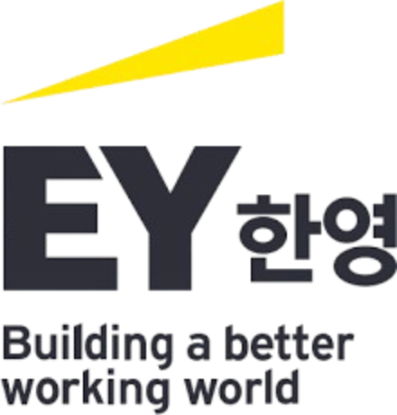
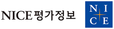
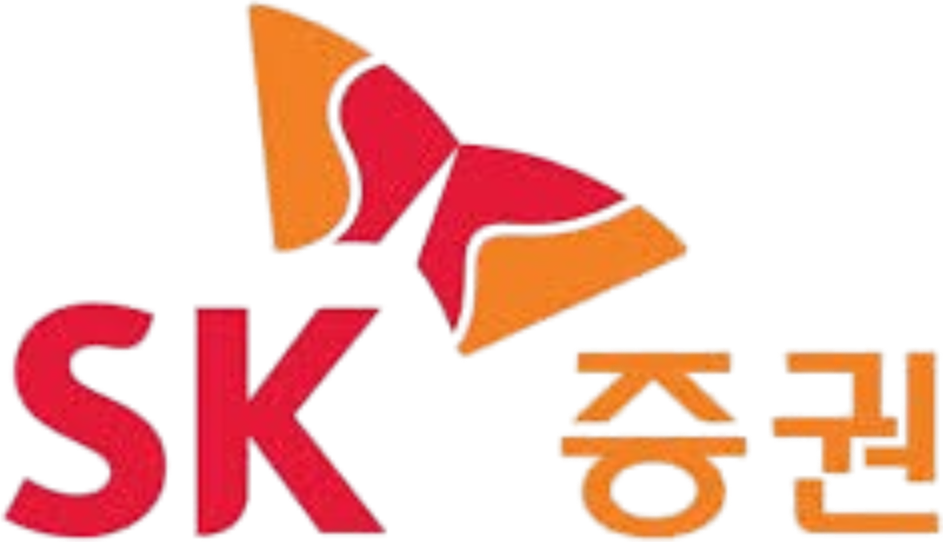
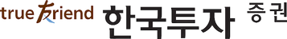
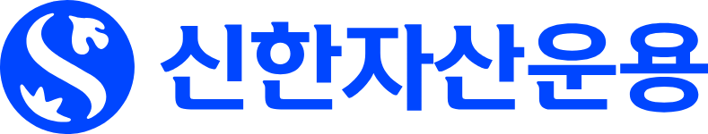
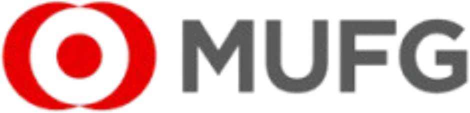
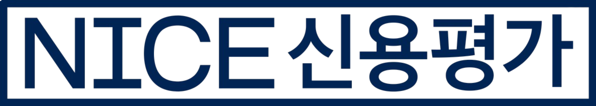
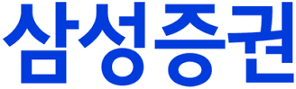
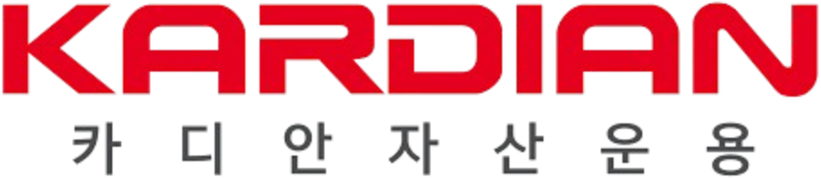
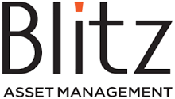
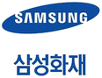
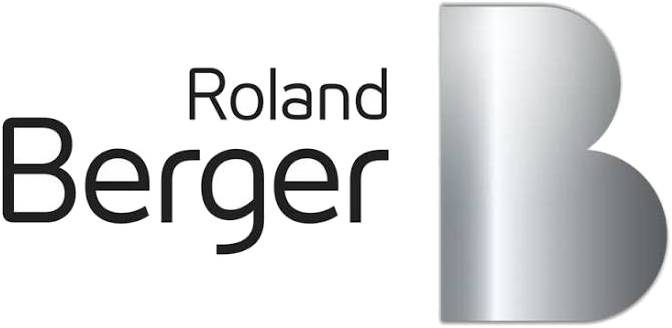
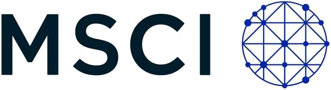
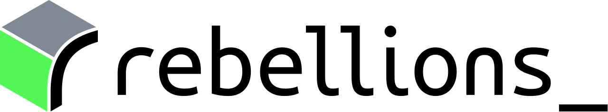
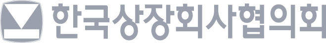
정규직 · 인턴십 합격 기관의 업종별 비율입니다.
주요 수상과 본선 진출 실적입니다.
타임폴리오 IVY 학회2년 연속 선정
파생상품팀: 파생상품 이론과 프라이싱을 익혀 FICC 피치북으로 적용하고 매크로 리포트를 작성합니다.
옵션 · 선물 · 스왑 기초
파생상품 프라이싱, BSM, Greeks, 변동성 표면 구현
FICC 솔루션 피치북, 매크로 리포트
26-2 세션
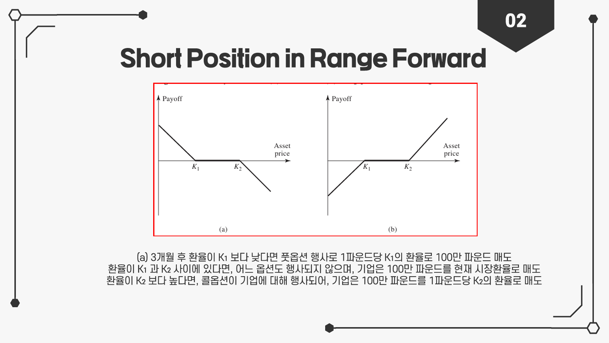
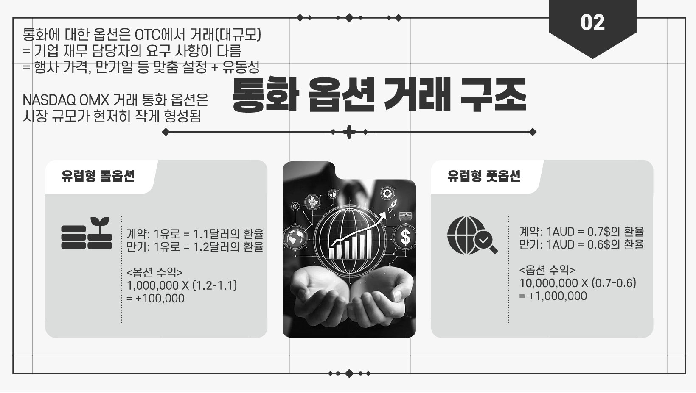
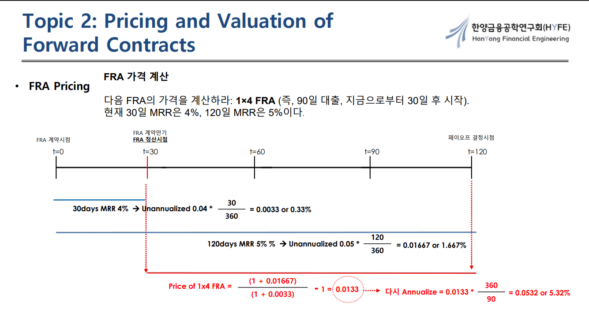
FICC 피치북 · 매크로 리포트 · 실제 결과물
퀀트팀: 알파/마켓메이킹 모델을 만들고 검증합니다.
파생상품 · 미시구조 · 자산가격 기초
알파 개발, 이론 구현 실습
주제별 팀 프로젝트, 트레이딩 실습
26-2 세션
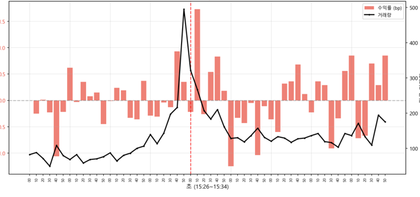
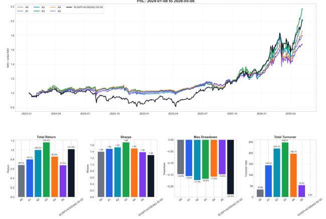
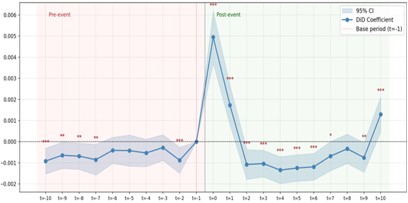
알파 전략 · 백테스트 · 실제 결과물
IBD팀: M&A·IPO 딜 구조를 익히고 투자제안서를 씁니다.
IB 업무 구조, LBO · Mezzanine
DCF 기반 Financial 모델링, M&A · IPO case study
실제 사례 기반 IM(투자제안서) 작성
26-2 세션
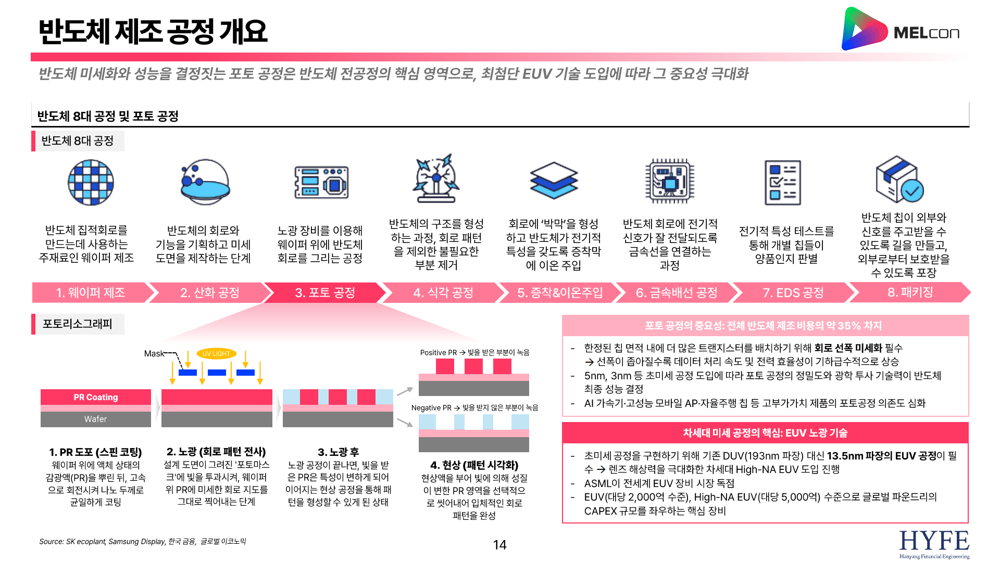
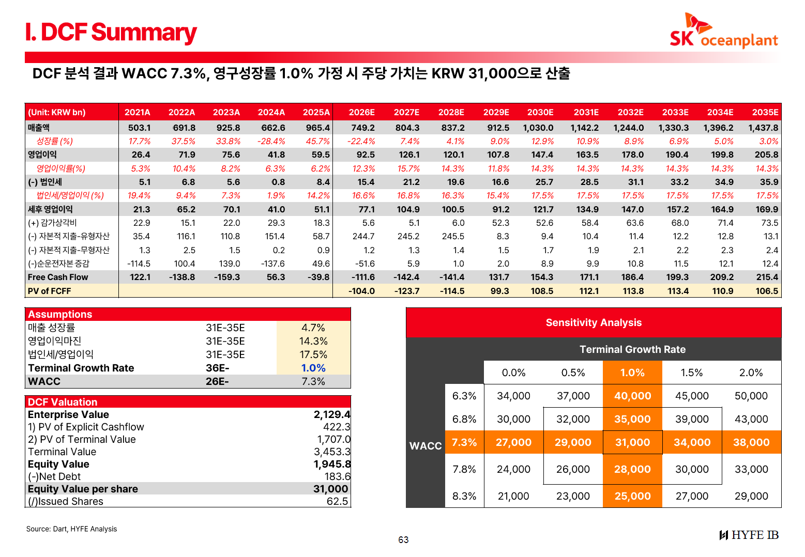
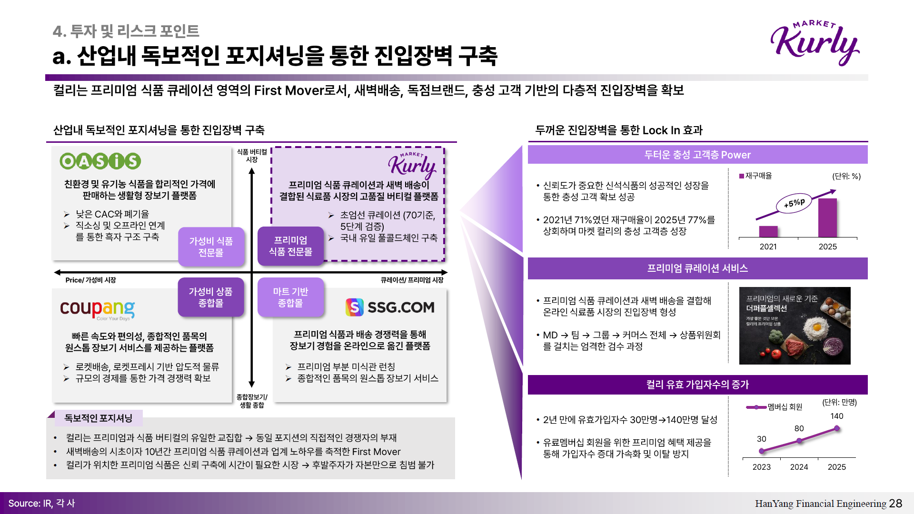
IM 투자제안서 · 실제 결과물
리서치팀: 기업의 펀더멘털을 분석해 목표주가와 투자의견을 도출합니다.
기업분석 세미나, Valuation 이론
PER · EV/EBITDA · DCF 모델링
산업·기업 심층 보고서 작성·발표, 대회 참가
26-2 세션
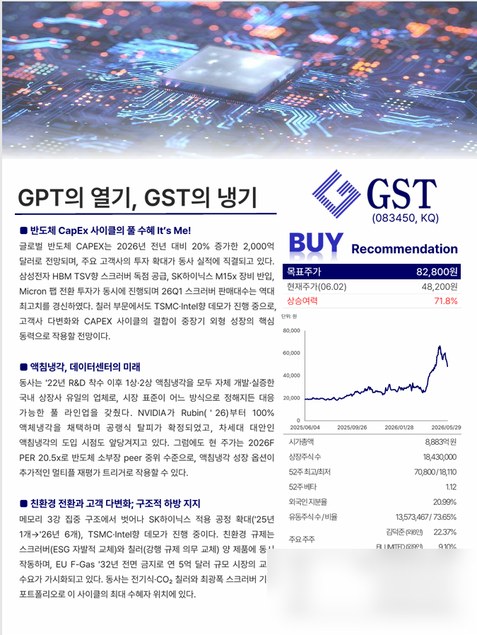
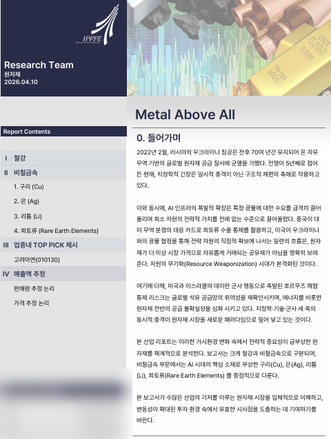
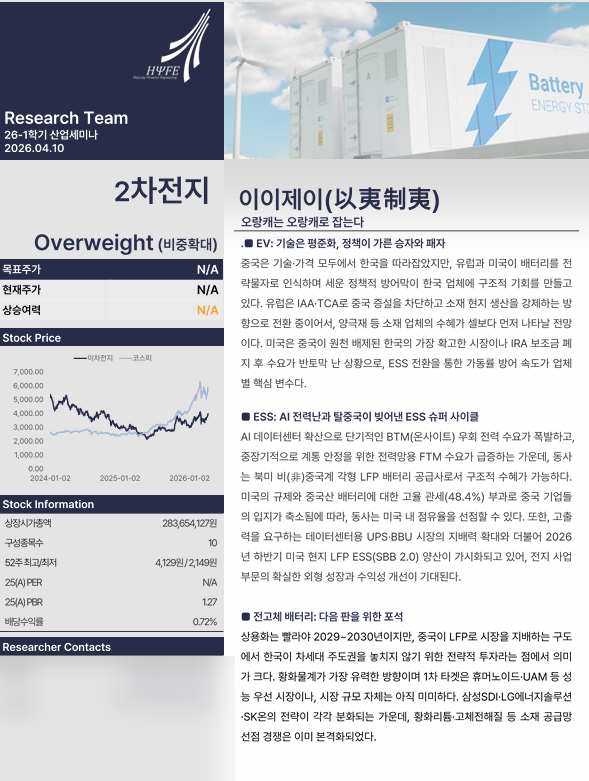
In-depth 리포트 · 실제 결과물
팀마다 1명씩 4인 1조. 주요 뉴스 · 거시 지표 · 주식 · 채권 시황 · 알파 전략 등 자유 주제로 case study를 발표합니다. 꾸준한 시장 팔로업이 면접 준비로 이어집니다.
투자자산운용사 · 금융투자분석사 · 재경관리사 · 신용분석사 · CFA, ADsP · SQLD · 빅데이터분석기사, 어학까지 함께 준비합니다.
타임폴리오 모의투자대회로 학회 내 수익률 대회를 열고, 월드퀀트 IQC · CFA 리서치 챌린지 · DB GAPS · DB 보험금융공모전에 참가합니다.
일정은 매 학기 관리자가 수정합니다. (26-2 기준)
버튼을 누르면 지원서 파일이 바로 내려받아집니다. 인스타그램 @hanyang_hyfe 링크에도 있습니다.
지원서 받기파일명은 2026_Autumn_HYFE_학과_이름으로 저장합니다.
지원서는 반드시 PDF로 변환해 hanyanghyfe@naver.com으로, 메일 제목도 파일명과 같게. 7월 26일(일) 23:59까지.
지원서를 바탕으로 인적성과 팀워크를 봅니다.
지망 팀 팀장이 주도해 금융에 대한 관심과 이해도를 봅니다.
승인하면 로그인 · LOUNGE · 내 정보 수정을 쓸 수 있습니다. 거절한 신청은 '거절' 탭에서 다시 승인할 수 있습니다.
관리자: 리포트마다 공개 범위를 바꿀 수 있습니다. 학회원 공개로 두면 로그인한 학회원에게만 목록에 보입니다.
| 팀 | 기업 · 딜 | 제목 | 기수 | 발행일 | 공개 범위 |
|---|
검색어를 줄이거나 다른 팀을 눌러 보세요.
검색 범위를 '제목+내용'으로 바꾸거나 검색어를 줄여 보세요.
학회원만 볼 수 있는 자료입니다. 캡처 · 외부 공유를 하지 말아 주세요.
학회 소개
회원만 볼 수 있는 메뉴입니다. 로그인한 학회원만 들어갈 수 있어요.